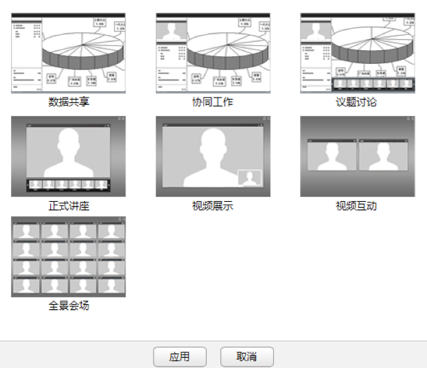

会议客户端支持在会议中切换会议界面显示模式，以满足您不同的会议需求。
在会议中，会议模式不同，主持人和其他与会者设置界面布局的权限也不同：
只有会议组织者预约会议时选择了“视频”媒体类型后，才能在会议中设置界面布局。
设置界面布局步骤如下：
1. 在工具栏中，单击。
2. 选择“普通显示器模式”或“16:9宽屏显示器模式”，系统显示界面如图所示。
显示器模式

3. 根据会议需要，选择一种界面布局。
4. 单击“应用”。
您也可以在界面布局设置完成后，单击工具栏的，选择“同步界面布局”。
在“主持人模式”下，主持人设置界面布局时，只有单击“同步界面布局”或者与会者自己单击“同步界面布局”后，其他与会者会议界面才与主持人保持一致。